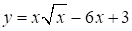
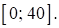

Авторский разбор и аудит предварительны; внешней экспертизы нет.
Модель автора: claude-opus-5-5 (opus; effort=low); в основных частотах: True ·
Впишите правильный ответ.
Найдите наименьшее значение функции  
КЭС: 4.1 Производная функции. Производные элементарных функций; 4.2 Применение производной к исследованию функций на монотонность и экстремумы. Нахождение наибольшего и наименьшего значения функции на отрезке
-29
| ID / вход | Действие | Результат | Локальные KC |
|---|---|---|---|
| s1 · condition | Найти производную функции y = x^{3/2} - 6x + 3 при x > 0 | y' = (3/2)√x - 6 | kc1 |
| s2 · s1, condition | Найти критические точки, решив y' = 0, и отобрать принадлежащие отрезку [0; 40] | √x = 4, x = 16 ∈ [0; 40]; y' < 0 при 0 < x < 16, y' > 0 при x > 16 | kc2 |
| s3 · s2, condition | Вычислить значения функции в критической точке и на концах отрезка и выбрать наименьшее | y(0) = 3, y(16) = 64 - 96 + 3 = -29, y(40) = 80√10 - 237 ≈ 15.98; наименьшее -29 | kc3 |
[
{
"id": "m1",
"name": "Поиск наименьшего значения на отрезке через производную",
"step_ids": [
"s1",
"s2",
"s3"
]
}
]Вход: функция — сумма степенных (в т.ч. x√x как x^{3/2}) и линейных слагаемых; операция: переписать в виде степени и применить правило (x^a)' = a·x^{a-1} и линейность; граница: внутри области определения, где производная существует.
{
"local_kc_id": "kc1",
"status": "match",
"catalog_kc_id": "literal_0efedaf04823",
"evidence": [
{
"ref": "step:s1:action",
"quote": "Найти производную функции y = x^{3/2} - 6x + 3 при x > 0"
},
{
"ref": "step:s1:result",
"quote": "y' = (3/2)√x - 6"
},
{
"ref": "image:assets/d41a829b48976398bd3a1d32.png",
"region_description": "Формула функции y = x√x − 6x + 3 во всём изображении"
}
],
"context_refs": [
"image:assets/d41a829b48976398bd3a1d32.png"
],
"alternatives_checked": [
{
"catalog_kc_id": "literal_3a3e1295118b",
"reason": "Функция не многочлен: слагаемое x√x имеет дробный показатель 3/2."
},
{
"catalog_kc_id": "power_laws",
"reason": "Запись x√x как x^{3/2} — вспомогательное преобразование, не наблюдаемое отдельно; основное действие — дифференцирование."
}
],
"rationale": "Операция: применение (x^p)'=p x^(p-1) с p=3/2 и линейности к сумме степенного и линейного слагаемых на области x>0. Соответствует определению целиком; переписывание x√x в степень выполнено неявно в формулировке шага.",
"proposal": null,
"blocking": false,
"issue_ids": []
}Вход: производная функции и отрезок; операция: решить уравнение f'(x)=0, отобрать корни из отрезка, определить знак производной вокруг них; граница: непрерывная функция на отрезке, дифференцируемая внутри.
{
"local_kc_id": "kc2",
"status": "needs_split",
"catalog_kc_id": null,
"evidence": [
{
"ref": "step:s2:action",
"quote": "Найти критические точки, решив y' = 0, и отобрать принадлежащие отрезку [0; 40]"
},
{
"ref": "step:s2:result",
"quote": "√x = 4, x = 16 ∈ [0; 40]; y' < 0 при 0 < x < 16, y' > 0 при x > 16"
}
],
"context_refs": [
"step:s1:result",
"image:assets/5c7902c7e20950ba34a51ae2.png"
],
"alternatives_checked": [
{
"catalog_kc_id": "stationary_point",
"reason": "Покрывает решение f'=0 и отбор точек отрезка, но не определение знака производной на промежутках."
},
{
"catalog_kc_id": "derivative_monotonicity",
"reason": "Покрывает знак производной и монотонность, но не нахождение нулей производной."
},
{
"catalog_kc_id": "local_extreme_sign",
"reason": "Вывод о типе экстремума в шаге явно не сформулирован; есть только знаки производной."
}
],
"rationale": "Кандидат объединяет два действия: нахождение стационарной точки x=16 с отбором по отрезку и установление знака производной по обе стороны от неё. Каждое по отдельности соответствует своему узлу каталога.",
"proposal": {
"parts": [
{
"part": "Решить (3/2)√x − 6 = 0 и отобрать x=16 из [0; 40]",
"possible_catalog_kc_id": "stationary_point"
},
{
"part": "Определить y'<0 на (0;16) и y'>0 при x>16",
"possible_catalog_kc_id": "derivative_monotonicity"
}
]
},
"blocking": false,
"issue_ids": []
}Вход: непрерывная на отрезке функция, критические точки внутри отрезка; операция: вычислить значения в критических точках и на концах, сравнить и выбрать наименьшее; граница: замкнутый отрезок.
{
"local_kc_id": "kc3",
"status": "match",
"catalog_kc_id": "global_interval_extreme",
"evidence": [
{
"ref": "step:s3:action",
"quote": "Вычислить значения функции в критической точке и на концах отрезка и выбрать наименьшее"
},
{
"ref": "step:s3:result",
"quote": "y(0) = 3, y(16) = 64 - 96 + 3 = -29, y(40) = 80√10 - 237 ≈ 15.98; наименьшее -29"
}
],
"context_refs": [
"step:s2:result",
"image:assets/d41a829b48976398bd3a1d32.png",
"image:assets/5c7902c7e20950ba34a51ae2.png"
],
"alternatives_checked": [
{
"catalog_kc_id": "literal_6308771d01a6",
"reason": "Вычисление значения по формуле — компонент шага; кандидат дополнительно включает сравнение и выбор глобального минимума."
},
{
"catalog_kc_id": "local_extreme_sign",
"reason": "Шаг устанавливает глобальное значение, а не тип локального экстремума."
}
],
"rationale": "Операция: сравнение значений функции на концах отрезка [0; 40] и в критической точке с выбором наименьшего значения −29. Полностью соответствует определению глобального экстремума на отрезке через сравнение концов и критических точек. Вычисления проверены: y(16)=−29, y(40)=80√10−237≈15.98.",
"proposal": null,
"blocking": false,
"issue_ids": []
}[]
[]
{
"author_path": "data/annotation/runs/2026-11-09-fipi-team-bogdan108-next-100/raw/author/BEB5E7.json",
"auditor_path": "data/annotation/runs/2026-11-09-fipi-team-bogdan108-next-100/raw/auditor/BEB5E7.json",
"accepted_after_review": null
}